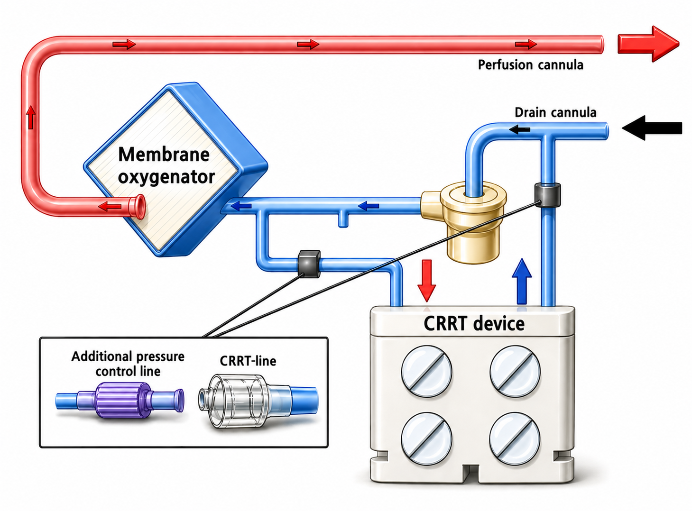

1.혈관 접근 (vascular access)
(1)ECMO 환자에서 CKRT vascular access는 ECMO 서킷을 기본으로 사용
(2)ECMO 서킷 내 압력
•펌프 전방 구간: 높은 음압 상태 유지
•펌프 후방 구간: 높은 양압 상태 유지
2.연결 방법
(1)CKRT line연결
ECMO 펌프의 전·후 위치에 연결하되 산화기를 경유하지 않도록 주의
①CKRT venous line (파란색): 펌프 앞쪽 캐뉼라에 연결
②CKRT arterial line (빨간색): 펌프와 산화기 사이(펌프 후방, 산화기 전방)의 캐뉼라에 연결
•산화기 후방에 연결하는 경우 CKRT 장비 운용 자체에는 문제가 없으나, shunt가 형성되어 산화기를 통해 가스 교환이 이루어진 혈액이 ECMO의 배액 캐뉼라로 유입될 수 있음. 이에 따라 ECMO VBGA의 해석을 어렵게 하므로 산화기 후방에 연결하지 않도록 주의
(2)Extra-line 연결
•일반적인 vascular access와 달리 ECMO 펌프로 인해 높은 압력이 발생하므로 알람이 자주 울리고 CKRT 운영에 어려움이 있을 수 있음. 이에 감압을 위해 extra-line을 사용하여 길이를 연장하여 CKRT를 적용함
•기본적으로 CKRT venous line과 CKRT arterial line 모두에 30 cm의 extra-line을 적용하여 저항을 만들어 줌
•CKRT 기계의 알람 빈도, ECMO 혈류 속도/RPM에 따라 extra-line의 길이를 조절하여 압력을 조절할 수 있으며, 이는 ICU CKRT 전담팀과 상의하여 결정함

1.Vascular Access
(1)General principle
•In patients receiving ECMO, the ECMO circuit is used as the basic CKRT vascular access
(2)Pressure characteristics within the ECMO circuit
•Pre-pump segment: maintained under high negative pressure
•Post-pump segment: maintained under high positive pressure
2.Connection Method
(1)CKRT line connection
Connect the CKRT lines to the pre- and post-pump segments of the ECMO circuit, but not to the post-oxygenator segment
①CKRT venous line (blue): connect to the pre-pump cannula
②CKRT arterial line (red): connect to the cannula between the pump and the oxygenator (post-pump, pre-oxygenator)
•Connection to the post-oxygenator segment generally does not interfere with CKRT device operation. However, it may create a shunt, allowing oxygenated blood exiting the oxygenator to return directly to the ECMO drainage cannula. This may complicate interpretation of ECMO venous blood gas analysis (pre-oxygenator VBGA); therefore, post-oxygenator connection should be avoided
(2)Extra-line connection
•Unlike conventional vascular access, the ECMO pump generates high pressures that frequently trigger alarms and make CKRT operation difficult. Therefore, extension lines (extra-lines) are used to lengthen the path and reduce pressure when applying CKRT
•In general, apply 30 cm extra-lines to both the CKRT venous line and CKRT arterial line to create additional resistance
•The length of the extra-line can be adjusted to control pressure based on CKRT alarm frequency and ECMO blood flow rate / RPM. This should be determined in consultation with the ICU CKRT team.